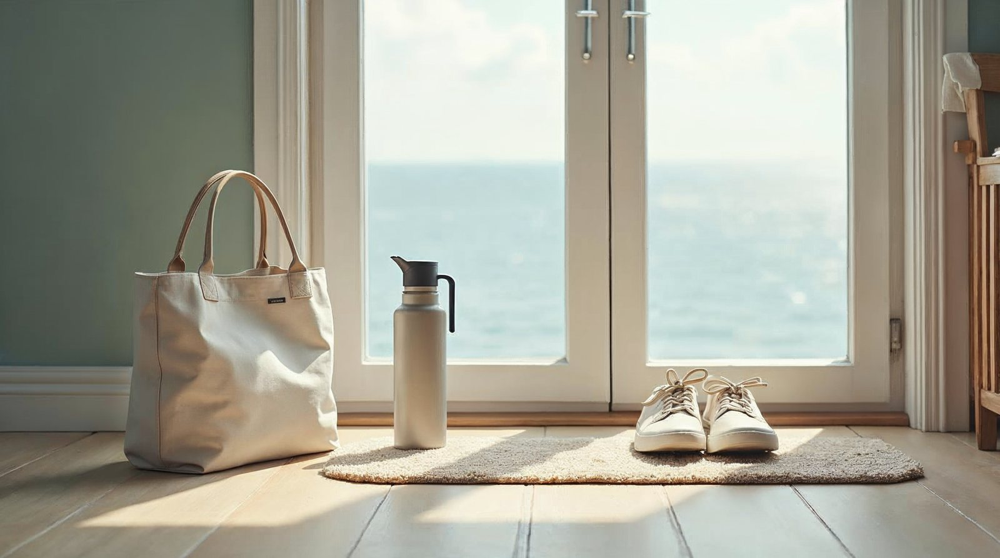
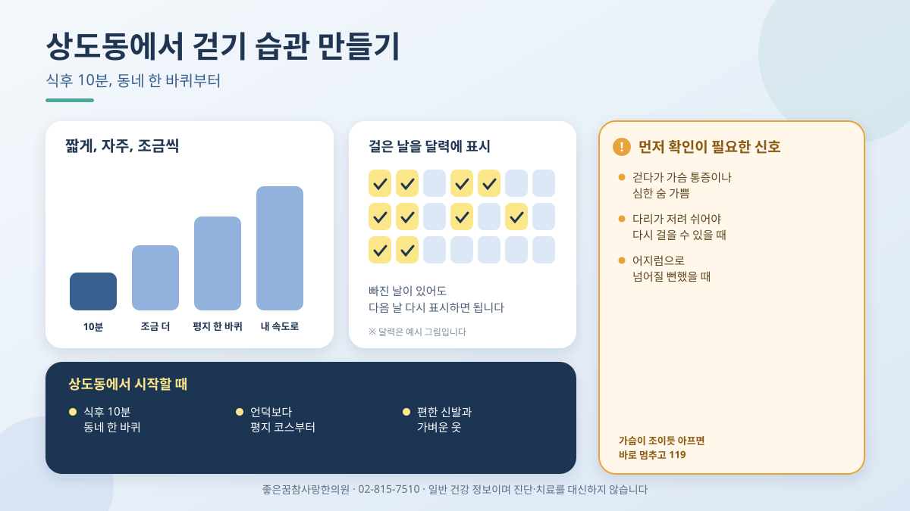

이종호 한의사 감수좋은꿈참사랑한의원 대표원장 (한의사 면허번호 19769)발행 2026-11-23 · 수정 2026-11-26
이 글의 차례
걷기 습관은 처음부터 길게 걷기보다 식후 10분, 동네 한 바퀴처럼 짧게 자주 걷는 것부터 시작해야 오래갑니다. 저는 빨리, 많이 걸으시라는 말보다 천천히라도 매일 나가 보시라는 말을 먼저 드립니다. 상도동과 노량진 주변의 공원과 산책길이면 충분합니다.
저녁 설거지를 마치고 현관에 놓인 운동화를 내려다봅니다. 오늘은 좀 피곤한데, 내일부터 할까. 달력에는 이번 달 초에 의욕적으로 그려 둔 동그라미가 사흘째에서 멈춰 있습니다. 이런 저녁, 한두 번쯤은 겪어 보셨을 겁니다.
진료실에서 이런 말씀을 자주 듣습니다. 걸어야 하는 건 아는데 그게 잘 안 된다고요. 의지가 약해서 그렇다며 스스로를 탓하는 분도 계십니다. 저는 그렇게 생각하지 않습니다. 사람은 원래 그렇고, 저도 그렇습니다.
운동하자는 말만 들어도 벌써 피곤해지는 게 당연합니다. 힘들 것 같고, 못 할 것 같으니까요. 그래서 저는 목표를 크게 드리지 않고, 해낼 수 있는 만큼을 함께 정하는 데서 시작합니다.
왜 시작이 어려울까요
처음부터 목표를 크게 잡으면 몸이 힘들고 금방 지치기 쉽습니다. 만 보나 한 시간 같은 숫자가 먼저 서면, 그 숫자를 못 채운 날이 실패처럼 느껴지지요. 걸은 날을 달력에 표시하는 것처럼 작게 기록하면 습관으로 자리 잡기가 쉬워집니다.
갑자기 걷는 양을 늘리면 발바닥, 무릎, 허리에 부담이 쌓일 수 있습니다. 첫 주에 의욕이 넘쳐 매일 한 시간씩 걷다가 둘째 주에 아파서 멈추는 일이 생기는 까닭입니다. 걸을 때 불편한 곳이 생기면 걷기 자체가 부담이 되고, 다시 시작하기는 더 어려워집니다.
날씨와 일정도 발목을 잡습니다. 비가 오거나 야근이 겹쳐 하루 이틀 빠지면 다시 시작할 마음을 내기가 어렵습니다. 함께 걸을 사람이나 정해진 시간이 없으면 내일로 미루기도 쉽고요.
그리고 마음이 있습니다. 진료실에서 만나는 분들은 생각보다 연약합니다. 열심히 하라고 하면 의지가 불타오르기보다 "나는 못 할 것 같아" 하고 낙담하시는 경우가 많습니다. 그래서 저는 기대를 조금 낮춰서 말씀드립니다.
상도역까지, 한 시간 안에는 돌아오지 마세요
복지관에서 어르신들께 걷기 이야기를 하다가 이렇게 말씀드린 적이 있습니다. "상도역까지 다녀오시는데, 한 시간 안에는 돌아오지 마세요." 빠른 분은 십 분이면 가는 길입니다. 그 길을 한 시간에 걸쳐 다녀오려면 걷는 것 같지도 않게 아주 천천히 걸어야 하지요.
천천히 발을 디디면 발바닥과 관절이 지금 어디를 밟고 있는지 몸이 하나하나 느끼게 됩니다. 몸의 위치를 느끼는 이 감각을 고유수용성 감각이라고 부르는데, 넘어지지 않고 오래 걸으려면 이 감각이 자꾸 자극을 받아야 합니다.
꼭 어르신만의 이야기는 아닙니다. 빨리 걸어야만 운동이 된다는 생각 때문에 아예 나서지 못하는 분이라면, 속도부터 내려놓아 보세요. 옆 사람과 이야기를 나눌 수 있을 만큼의 속도면 됩니다.
걷기가 어려운 날에는 공원 벤치까지 나가 앉아만 계셔도 됩니다. 햇빛을 보고 바람을 쐬러 나서는 일 자체가 나를 걷게 하고 움직이게 합니다. 내가 할 수 있는 나의 분량이 있습니다. 젊을 때보다 적어 보여도 결코 적지 않습니다.
먼저 이렇게 여쭙니다
- 하루에 걷는 시간이 얼마나 되나요?
- 걸을 때 무릎이나 허리가 불편한가요?
- 걷다가 숨이 차거나 가슴이 답답한 적이 있나요?
- 언제 걷기가 가장 편한 시간인가요?
- 걷기를 시작하려는 이유가 무엇인가요?
마지막 질문의 대답을 저는 가장 오래 듣습니다. 이유가 분명하면 목표를 작게 잡아도 오래가고, 그 이유에 맞춰 걷는 시간과 길을 고르기도 쉬워집니다.

일주일에 한 번 세게보다, 자주 약하게
방송에서는 최대한 빨리, 많이 걸으라는 강한 이야기를 자주 합니다. 자극이 되니까요. 그런데 저는 일주일에 한 번 빨리 걷는 것보다 세 번 천천히 걷는 것이 낫고, 걷기 힘든 날에는 앉아서 손뼉이라도 치는 것이 아무것도 안 하는 것보다 낫다고 말씀드립니다.
손뼉을 친다고 근육이 불쑥 생기지는 않습니다. 그래도 그 작은 움직임이 내 몸에 "나는 움직이는 사람이다" 하고 신호를 보냅니다. 힘이 있는 날에만 하지 말고, 힘이 없는 날에는 힘이 없는 만큼 하시면 됩니다.
스쿼트를 하루에 이백 번 하고 오셨다는 이야기를 들으면 저는 마음이 조금 쓰입니다. 참 열심이신데, 이어 갈 수 없는 강도라면 오래가지 못합니다. 저도 앉았다 일어나기를 한 시간씩 하라고 하면 지겨워서 못 합니다. 그래서 그냥 밖에 한 시간 있다 오시라고 말씀드립니다.
못 지킨 날이 생겨도 괜찮습니다. 스스로를 탓하지 말고 다음 날 다시 나가면 됩니다. 비 오는 날과 눈 오는 날에는 무리해서 나가지 마시고, 집 안에서 가볍게 움직이는 것으로 대신하세요.
예를 들면 이런 경우입니다
예를 들어 퇴근이 늦어 저녁에 따로 걸을 시간이 없는 직장인이라면, 걷기를 새로 끼워 넣기보다 이미 걷는 길을 조금 늘려 보자고 합니다. 버스에서 한 정거장 먼저 내려 걷거나, 점심을 먹고 10분 동네를 한 바퀴 도는 식입니다.
예를 들어 은퇴 뒤 집에 있는 시간이 길어진 분이라면, 운동 시간을 따로 정하기보다 갈 곳을 하나 정해 보자고 합니다. 복지관에 점심을 드시러 가거나 도서관에 들르는 길을, 빨리 가지 말고 느릿느릿 다녀오는 식입니다. 그 길 자체가 나를 걷게 합니다.
예를 들어 무릎이나 허리가 불편해 공원까지 가는 것도 망설여지는 어르신이라면, 집 앞 벤치까지 종종걸음으로 다녀오는 것부터 시작합니다. 삼 미터를 삼십 분 동안 다녀오셔도 괜찮습니다. 다만 다친 뒤라면 언제부터 어디까지 걸어도 되는지는 치료한 의사의 설명을 먼저 따르세요.
스스로 점검해 보세요
걷기 습관이 자리 잡지 못하는 까닭이 어디에 있는지, 해당하는 것을 골라 보세요.
- 처음부터 하루 한 시간이나 만 보처럼 큰 목표를 세웠다
- 며칠 빠지면 다시 시작하기가 어렵다
- 빨리 걸어야만 운동이 된다고 생각한다
- 걷고 난 다음 날 발바닥이나 무릎, 허리가 뻐근하다
- 혼자 걷다 보니 자꾸 미루게 된다
- 잠드는 시각이나 끼니 시간이 날마다 들쭉날쭉하다
앞의 세 가지는 목표를 줄이고 속도를 내려놓으라는 신호입니다. 넷째는 걷는 양과 신발, 길을 다시 볼 때이고, 마지막 두 가지는 걷기를 하루 리듬 안에 묶어 둘 방법을 찾을 때입니다.
일상에서 먼저 해 볼 수 있는 것
- 처음에는 10분부터 시작해 조금씩 늘리기
- 식후 10분 동네 한 바퀴 걷기
- 언덕길보다 평지 코스부터 걷기
- 편한 신발과 가벼운 옷 준비하기
- 걸은 날을 달력에 표시해 두기
걷기를 이미 하고 있는 일에 붙이면 잊지 않기 쉽습니다. 저녁을 먹고 설거지를 마치면 바로 운동화를 신는 식이지요. 운동화는 현관 가장 앞에 두고 걸을 때 입을 가벼운 옷도 한 벌 정해 두면, 나서는 데 드는 마음이 한결 줄어듭니다.
혼자 걸으면 마음이 가라앉기 쉽습니다. 이웃이나 가족과 시간을 정해 같이 걸어 보세요. 여럿이 함께하면 별것 아닌 걸음도 대단한 일을 하는 것 같아 기분이 나고, 사람은 기분이 좋아야 계속합니다.
늘릴 때는 천천히 늘립니다. 아프지 않은 날이 이어지면 조금씩만 더하고, 걸은 다음 날 아침 발과 무릎이 평소와 같은지 확인하세요. 60대에 새로 시작하신다면 60대에 걷기 운동을 새로 시작할 때 무릎과 허리는 어떻게 점검하나요?에 한두 달 늘려 가는 순서를 따로 적어 두었습니다.
걷기 전에는 발목을 몇 번 돌려 몸을 깨우고, 걸은 뒤에는 종아리와 허벅지를 천천히 늘려 주세요. 신발은 쿠션이 있고 발에 맞는 것으로 고르시고, 밑창 한쪽이 유난히 닳았다면 바꿔 보실 때입니다.
왜 걷는지에 따라 걷는 법이 조금 달라집니다
저는 몸이 회복하는 바탕을 다섯 가지로 봅니다. 잘 먹고, 잘 싸고, 잘 자고, 마음 편하고, 몸 따뜻하게. 걷기는 이 다섯 가지 사이를 이어 주는 생활의 한 부분이라, 무엇을 위해 걷는지에 따라 걷는 시각과 속도를 조금씩 달리합니다.
체중이 목표라면 걷기만으로 숫자를 바꾸려 하기보다 끼니 간격과 저녁 시간을 함께 봅니다. 끼니를 거르면 저녁이나 밤에 몰아 먹기 쉽고, 잠이 모자란 날은 음식이 더 당긴다는 분이 많기 때문입니다.
잠이 목표라면 걷는 시각이 더 중요해집니다. 저녁 식사 뒤 20~30분, 숨이 찰 정도가 아니라 이야기를 나눌 수 있는 속도로 걷고, 잠들기 1~2시간 전 따뜻한 물에 몸을 담그는 순서를 권합니다. 몸이 하루의 흐름을 기억하도록 돕자는 뜻입니다.
다리 힘과 균형이 걱정이라면 속도보다 발 디딤에 마음을 둡니다. 천천히 디딜수록 발바닥과 관절이 하는 일을 몸이 더 많이 느낍니다. 보폭은 뒷발이 앞발 근처까지만 나가는 종종걸음으로 걸어 보세요.
속이 자주 더부룩한 분이라면 식사 직후가 걷기 좋은 때입니다. 바로 눕거나 앉지 말고 10~15분쯤 동네를 한 바퀴 돌아보세요.
걷다가 어딘가 아파 오면
걷기가 즐거워질 무렵 발바닥이나 무릎이 아파 오는 분이 있습니다. 원칙대로라면 한동안 걷는 양을 줄이고 쉬면서 살피는 것이 맞습니다. 그런데 걷는 것이 하루의 낙인 분께 걷지 말라고만 하면 그 말씀을 지키기 어렵지요.
그래서 저는 장보기나 출퇴근처럼 생활 속 걸음은 그대로 두고, 운동 삼아 걷던 양만 평소의 70% 정도로 줄여 보자고 합니다. 다음 날 아침 불편이 늘지 않으면 조금씩 되돌리고, 늘었다면 그 걷기는 잠시 쉬어 갑니다.
아프면 줄이는 것이 먼저입니다. 참고 걸어야 근육이 생긴다고 여기기 쉽지만, 아픈 쪽을 감싸느라 걸음이 바뀌면 다른 곳까지 불편해질 수 있습니다. 어느 만큼까지 걸어도 되는지는 진료 때 걷는 모습을 보고 함께 정해 드립니다.
지키는 순서를 여쭤보시면 저는 먼저 잘 쉬고, 아픈 것은 미루지 않고 치료하고, 그다음에 움직이자고 말씀드립니다. 지치고 아픈 몸에 억지로 걷기를 얹으면 오래가지 못하기 때문입니다. 걷기는 쉬는 일과 맞바꾸는 것이 아니라, 잘 쉰 몸 위에 얹는 것입니다.
가족이 함께할 수 있는 것
부모님께 걸으시라고 권하고 싶은 자녀분도 많습니다. 그럴 때는 오늘 몇 걸음 걸으셨는지 묻기보다 일주일에 한두 번이라도 함께 나서 주세요. 하루 10~15분, 집 근처 평지를 같이 걷는 것부터 시작해도 좋습니다.
넘어질까 걱정하는 마음이 커지면 외출이 더 줄어들기도 합니다. 옆에서 걸음을 맞춰 주는 사람이 있으면 그 걱정이 한결 덜해지기도 합니다. 진료에 함께 오셔서 평소 걸으시는 모습을 들려주시면 저도 계획을 세우기가 쉬워집니다.
한의원에서 함께 살필 수 있는 경우
- 걷기를 시작했는데 무릎이나 허리가 불편한 경우 걷는 습관과 몸의 균형을 함께 살핍니다.
- 체중 관리와 함께 걷기를 하려는 경우 식사와 잠의 리듬을 함께 살핍니다.
- 발바닥이나 발뒤꿈치가 아픈 경우 신발과 걷는 습관을 함께 살핍니다.
좋은꿈참사랑한의원에서는 하루 생활과 걸을 때 불편한 곳을 먼저 듣고, 필요하다고 판단될 때 걷는 모습과 무릎·허리·발을 살핍니다. 체중 관리가 함께 목표라면 인바디 770으로 체성분을 확인해 기준점을 잡고, 침·추나·한약 상담 등 맞는 방법과 걷는 양을 늘리는 순서를 함께 정합니다.
처음 오시면 하루를 어떻게 보내시는지부터 듣습니다. 몇 시에 일어나 언제 식사하고, 하루에 걷는 길은 어디인지요. 그다음 양손을 내어 달라고 해 맥을 짚는데, 손목을 짚는 동안에도 잠과 소화, 손발이 찬지를 여쭙고 듣습니다.
이어서 필요하면 서 있는 모습과 몇 걸음 걷는 모습, 신고 오신 신발이 닳은 모양을 봅니다. 그날 정한 방법과 이유를 먼저 말씀드리고, 다음 진료까지 걸을 시간과 길을 한두 가지로 정해 드립니다. 다시 오시면 그 약속이 지낼 만했는지부터 여쭙습니다.
걷기를 시작하고 발바닥이 아프다면 동네 공원 걷기를 새로 시작했는데 발바닥이 아플 때는 어떻게 살피나요?를 함께 읽어 보세요.
언덕과 계단이 많은 길에서 무릎이 신경 쓰인다면 상도동 언덕길과 계단을 매일 오르내릴 때 무릎은 어떻게 챙기나요?에 동네 길을 다니는 요령을 정리해 두었습니다.
이렇게 기록해 오시면 상담이 쉬워집니다
하루 걸은 시간이나 걸음 수, 걷고 나서 불편했던 부위, 걸은 길이 평지였는지 언덕이나 계단이 섞였는지, 그리고 걸을 때 신는 신발 정도면 됩니다. 달력에 표시해 둔 동그라미를 사진으로 찍어 오셔도 좋습니다.
빠진 날이 많아도 괜찮습니다. 왜 빠졌는지가 다음 계획을 세우는 데 더 쓸모 있는 단서가 될 때가 많습니다.
이런 증상은 먼저 확인이 필요합니다
- 걷다가 가슴 통증이나 심한 숨 가쁨이 있는 경우
- 다리가 저리고 쉬어야 다시 걸을 수 있는 경우
이런 신호가 있으면 한의원보다 가까운 병원이나 응급실을 먼저 찾으세요.
어제처럼, 오늘도 한 번
걷기 습관은 거창한 결심보다 작은 되풀이에서 자랍니다. 열심히 하려는 마음은 귀합니다. 그 크기를 조금 줄여 놓고, 그 안에서 꾸준히 하시면 됩니다.
오늘 하루, 어제보다 몇 걸음 더가 아니라 어제처럼 오늘도 한 번 나가 보시는 것부터 권합니다. 다음에 오시면 달력에 동그라미가 몇 개 생겼는지, 걸으면서 어디가 편하고 어디가 불편했는지부터 여쭙겠습니다.

여쭙는 것
- 하루에 걷는 시간이 얼마나 되나요?
- 걸을 때 무릎이나 허리가 불편한가요?
- 걷다가 숨이 차거나 가슴이 답답한 적이 있나요?
생활에서 해 볼 것
- 처음에는 10분부터 시작해 조금씩 늘리기
- 식후 10분 동네 한 바퀴 걷기
- 언덕길보다 평지 코스부터 걷기
한의원에서 함께 살필 것
- 걷기를 시작했는데 무릎이나 허리가 불편한 경우 걷는 습관과 몸의 균형을 함께 살핍니다.
- 체중 관리와 함께 걷기를 하려는 경우 식사와 잠의 리듬을 함께 살핍니다.
- 발바닥이나 발뒤꿈치가 아픈 경우 신발과 걷는 습관을 함께 살핍니다.
먼저 확인이 필요한 신호
- 걷다가 가슴 통증이나 심한 숨 가쁨이 있는 경우
- 다리가 저리고 쉬어야 다시 걸을 수 있는 경우
한눈에 보는 표
| 구분 | 핵심 |
|---|---|
| 여쭙는 것 | 하루에 걷는 시간이 얼마나 되나요? 걸을 때 무릎이나 허리가 불편한가요? |
| 생활에서 해 볼 것 | 처음에는 10분부터 시작해 조금씩 늘리기 식후 10분 동네 한 바퀴 걷기 |
| 한의원에서 함께 살필 것 | 걷기를 시작했는데 무릎이나 허리가 불편한 경우 걷는 습관과 몸의 균형을 함께 살핍니다. 체중 관리와 함께 걷기를 하려는 경우 식사와 잠의 리듬을 함께 살핍니다. |
| 먼저 확인이 필요한 신호 | 걷다가 가슴 통증이나 심한 숨 가쁨이 있는 경우 다리가 저리고 쉬어야 다시 걸을 수 있는 경우 |
자주 묻는 질문
하루 만 보를 꼭 걸어야 하나요?
숫자보다 꾸준히 걷는 습관이 중요해, 할 수 있는 만큼부터 시작하는 것을 권합니다.
비 오는 날은 어떻게 하나요?
실내에서 제자리걸음이나 의자에서 천천히 일어났다 앉기로 대신해 보세요. 무릎이 불편하다면 계단 오르내리기는 줄이는 편이 좋습니다.
아침과 저녁 중 언제 걷는 게 좋나요?
꾸준히 걸을 수 있는 시간이 가장 좋습니다. 추운 겨울 이른 아침이나 혈압이 걱정되는 분은 해가 오른 뒤 걷는 편을 권합니다.
걷기와 함께 식사도 바꿔야 하나요?
체중 관리가 목표라면 걷기와 함께 저녁 시간과 단 음료부터 점검해 보시길 권합니다. 진료 때 생활에 맞춰 함께 정리해 드립니다.
좋은꿈참사랑한의원은 재진 때 지난번 이야기부터 이어서 여쭙니다. 진료시간과 예약은 오시는 길에서 확인하세요.
어디서 상담받을 수 있나요?
좋은꿈참사랑한의원은 서울 동작구 만양로2길 2 신성빌딩 3층·5층(서울 동작구 상도동, 7호선 상도역 3번 출구 근처)에 있습니다. 한의사 3명(이종호 대표원장, 조영기 수석진료원장, 정원영 진료원장)이 진료합니다. 진료시간은 평일 09:30~20:00(점심 13:00~14:00), 토·일·공휴일 09:30~15:00이며, 방문 전 전화로 확인을 권합니다. 예약은 네이버 예약, 카카오톡 상담, 전화 02-815-7510로 받습니다.
이 글은 일반적인 건강 정보이며 개인의 진단이나 치료를 대신하지 않습니다. 증상이 있거나 복용 중인 약이 있다면 진료를 통해 확인하세요. 치료 효과는 개인마다 다를 수 있습니다.
작성 기준: 일반적으로 알려져 있는 건강 정보를 참고해 정리했습니다(대표원장 감수). 증상 기록은 1~2주 동안 하루 1회, 비슷한 시간에 적어 오시면 지난 상태와 비교하기 쉽습니다.